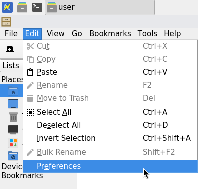
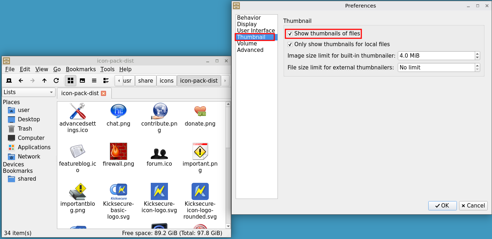

We believe security software like Kicksecure needs to remain Open Source and independent. Would you help sustain and grow the project? Learn more about our 14 year success story and maybe DONATE!
deep scan readyDocumentationFile indexingPrevious page: deep scan readyIndex page: DocumentationNext page: File indexingThumbnails
Thumbnails are small preview images shown for files (for example, photos, PDFs, or videos) in the file manager. In Kicksecure, thumbnails are disabled by default in its default file manager to reduce the risk from malicious files.
Introduction
Thumbnail is a small preview image of a file (such as a picture, video, or document). Thumbnails make it easier to recognize and organize files in a folder.
Security Implication
To show thumbnails, the system must open and decode (parse) each file to create a preview. If a file is malicious or specially crafted, it can sometimes exploit bugs in the thumbnailing software or related libraries. In the worst case, this can lead to the attacker running code on your system (remote code execution), for example by chaining multiple steps such as: exploit decoder → gain user privileges → exploit local privilege escalation/sandbox escape. [1]
Mitigation
To mitigate these types of attack, the thumbnail feature is disabled by default in Kicksecure in its default file manager.
Thumbnails are not the only feature that processes files automatically. File indexing services (used for search), such as Tracker-Miner, can also parse files in the background and may be vulnerable in similar ways. For reference, see 1-Click RCE on GNOME (CVE-2023-43641) in file indexing service. At the time of writing there is no file indexing service by default in Kicksecure.
See also Untrusted Input and Attack Surface.
Catfish
catfish (file searching tool) is installed by default in Kicksecure.
There does not appear to be a way to configure Catfish to disable thumbnails regardless of the view mode you choose in the hamburger menu. The "large" view is the thumbnail view, and according to the code, selecting the "large" view will enable thumbnails immediately and keep them enabled by default for subsequent starts of Catfish, until you set it back to "compact list" view.
"Compact list" view appears to be the default view, and thumbnail generation seems to be disabled in this view, so explicitly disabling thumbnails may not be necessary.
Forum discussion: Install Catfish file searching tool (Xfce DE) by default
Enable Thumbnails Again
If you want to enable thumbnails again, follow these steps:
- Click on File Manager → Edit → Preferences

- Click on Thumbnail → Tick Show thumbnails of files

Forum discussion: Thumbnails not working in new whonix lxqt
Footnotes
- Examples: * ImageTragick * Poppler PDF library * gnome-exe-thumbnailer/Bad Taste
Categories: Documentation